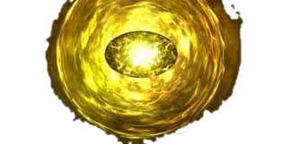
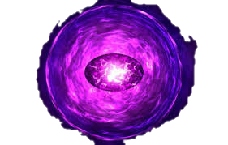
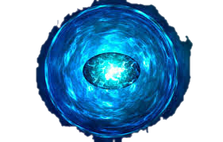
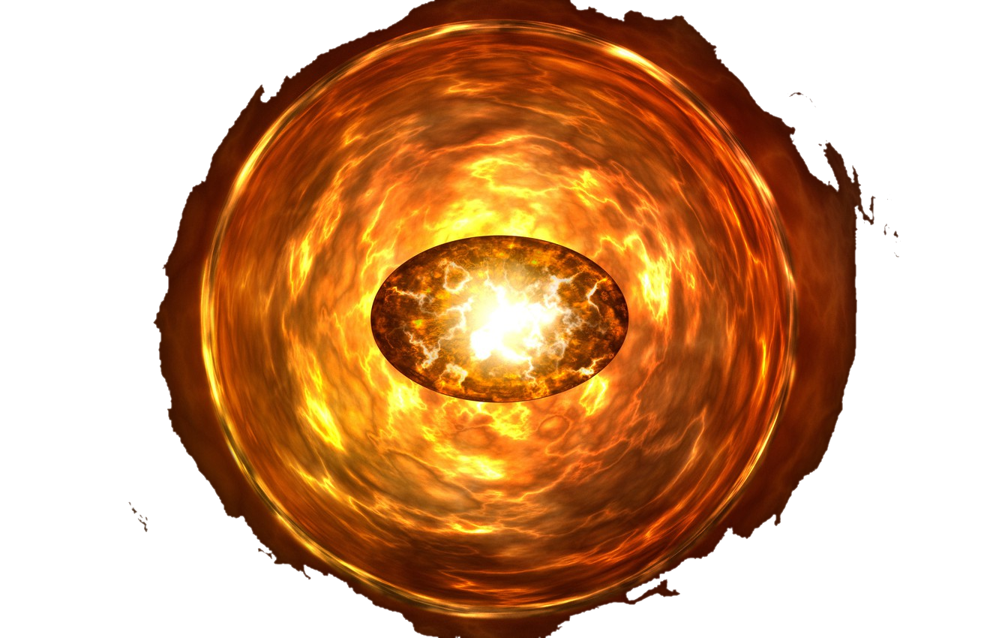
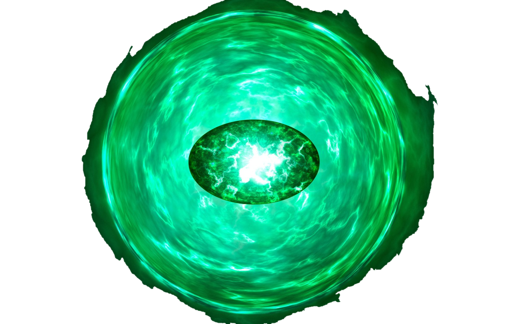
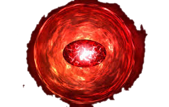

| Name | Color | Power and capibilities | Image |
|---|---|---|---|
| Mind | Yellow | The Mind Stone was one of the six Infinity Stones, the remnant of a singularity that predated the universe, which governed over the fabric of mind. It was previously wielded by Loki inside his Scepter who received it as a gift from Thanos for the Chitauri Invasion. After the Battle of New York, the Scepter was confiscated by HYDRA, whose scientists used it to give extraordinary powers to the twins Wanda and Pietro Maximoff. After the fall of HYDRA, the Scepter was recovered by the Avengers. It was taken by Ultron and its blue gem casing was shattered, releasing the stone inside it and placing it on the being that would become Vision. It remained with Vision until it was forcibly removed by Thanos following the Battle of Wakanda, killing Vision in the process. It was then destroyed along with the other five stones by Thanos after the Infinity War. |  |
| Power | Purple | TThe Power Stone was a powerful weapon capable of granting a person with great, cosmic power, but was highly likely to kill any organic beings that touch it. It was used by Eson the Searcher until it was hidden for millennia on the planet Morag inside the Orb.The Orb containing the Power Stone was coveted by Thanos, who employed the Kree warrior Ronan the Accuser in 2014 to retrieve it for him. However, before Ronan could acquire the Orb, it was stolen by Star-Lord, prompting a galaxy-wide hunt that resulted in the Orb being given to the Nova Corps for safe-keeping. |  |
| Space | Blue | The Space Stone was one of the six Infinity Stones, the remnant of a singularity that predated the universe, which represented the element of space. Housed within the Tesseract, over the course of history it was wielded by many individuals, including Johann Schmidt of HYDRA, Mar-Vell of the Kree Empire, the Skrulls, and Loki of Asgard. During the Infinity War, the Tesseract was shattered by Thanos, who put the Space Stone inside his Infinity Gauntlet. After Thanos successfully wiped out half of life, he destroyed the Space Stone, along with the other Infinity Stones to prevent his work being undone. |  |
| Soul | Orange | The Soul Stone was one of the six Infinity Stones, the remnant of a singularity that predates the universe. For some time, it was kept on the planet Vormir under the watchful eye of the Red Skull, before Thanos came to the planet in search of it and had to tragically sacrifice his beloved daughter Gamora to obtain it.In 2023, the Avengers initiated a Time Heist in order to resurrect the lives Thanos had claimed, with Hawkeye and Black Widow sent back in time to 2014 to retrieve the Soul Stone from Vormir, with Romanoff sacrificing her life. |  |
| Time | Green | The Time Stone was one of the six Infinity Stones, the remnants of singularities that predated the universe. It had the ability to manipulate time, even in places "beyond" time, such as the Dark Dimension. It was contained inside the Eye of Agamotto under the protection of the Masters of the Mystic Arts, who swore to protect it. Doctor Strange came across the relic in Wong's library and used it to force a bargain with Dormammu.Later, during the Battle of Titan, Doctor Strange relinquished the Stone to Thanos in exchange for sparing Iron Man's life. |  |
| Reality | Red | The Reality Stone was one of the six Infinity Stones, the remnant of a singularity that predated the universe, which represented the fabric of reality. Liquefied into a dark red fluid called the Aether (pronounced ēTHər), the Dark Elves and their leader Malekith intended to use it to bring eternal darkness upon all of the Nine Realms. Taken from the Elves by the Asgardians, it was later entrusted to the Collector following the conclusion of the Second Dark Elf Conflict. |  |